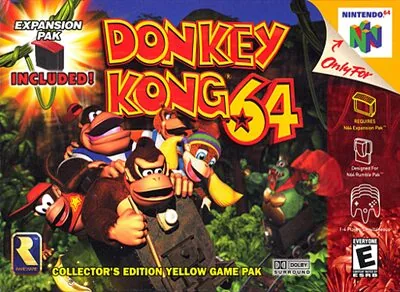
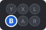
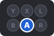
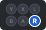
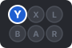
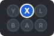
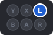
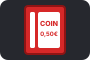
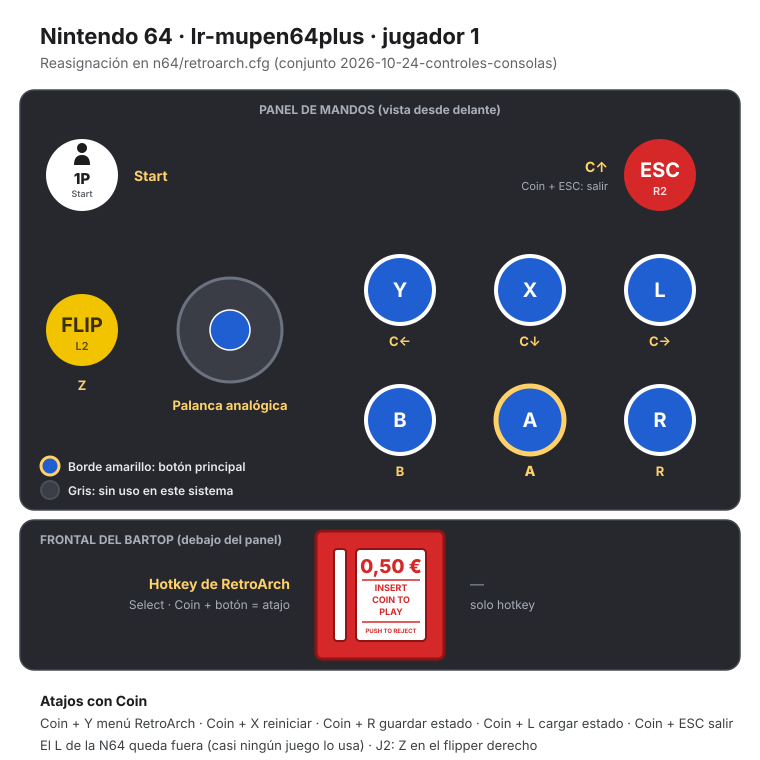
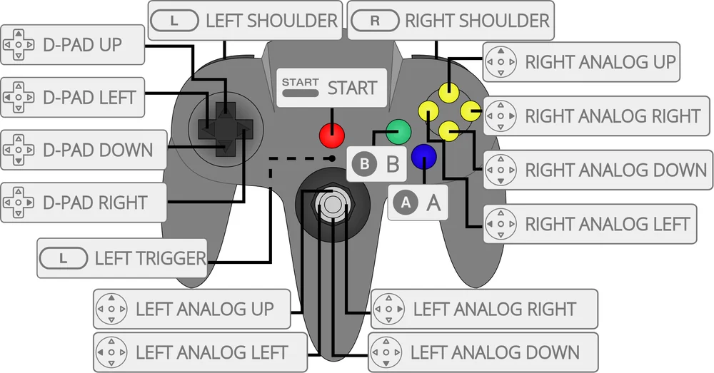

Nintendo 64
Donkey Kong 64
Controles
¿Va fluido (imagen y sonido)? A saltar · B atacar · Z (flipper izq.) agacharse · C ← → girar la cámara y C ↑ (Escape) mirar en primera persona. ¿Qué hace R?
Mando de N64 adaptado al panel. El joystick mueve la palanca analógica.
| Panel | Juego |
|---|---|
 | B · Atacar · coger barriles |
 | A · Saltar |
 | R · Colocar la cámara detrás ⚠️ |
 | C ← · Girar la cámara (con Z: sacar el arma) |
 | C ↓ · Distancia de la cámara (con Z: sacar la cámara de fotos) |
 | C → · Girar la cámara (con Z: lanzar una granada de naranja) |
| C ↑ · Mirar en primera persona (con Z: tocar el instrumento) | |
| Z · Agacharse · usar plataformas especiales | |
| Start | |
 + | Salir del juego |
El panel en Nintendo 64




Argumento
Recopilado de internet (2026-11-03). Lo marcado con ⚠️ no está probado en la bartop.
King K. Rool quiere destruir la isla de los Kong con un arma enorme, pero su isla mecánica choca contra unas rocas. Mientras la reparan, sus secuaces roban el tesoro de plátanos de Donkey Kong y secuestran a sus amigos.
Donkey Kong los rescata uno a uno: Diddy, Lanky, Tiny y Chunky, cada uno con sus habilidades.
Final: los Kong entran en la fortaleza de K. Rool, desactivan el arma y lo vencen en un combate de boxeo por asaltos.
Fuentes
Jugabilidad
Recopilado de internet (2026-11-03). Lo marcado con ⚠️ no está probado en la bartop.
- Tipo de juego: plataformas en 3D de Rare (1999). Estructura en «Guía de niveles».
- Cinco Kong: cada uno tiene su arma, su instrumento y movimientos propios (Diddy vuela con mochila cohete, Tiny encoge…). Se cambia en los barriles de etiqueta.
- Coleccionables: plátanos dorados, plátanos de colores (uno por Kong), monedas, planos y medallas.
- Cámara: C ← y C → la giran y C ↑ mira en primera persona. Z + C usa el arma, la granada, el instrumento o la cámara de fotos.
- Necesita el Expansion Pak en la consola; el emulador ya lo incluye.
Fuentes
Guía de niveles
Recopilado de internet (2026-11-03). Lo marcado con ⚠️ no está probado en la bartop.
Son 7 mundos y la fortaleza final:
| Mundo | Nombre |
|---|---|
| 1 | Jungle Japes |
| 2 | Angry Aztec |
| 3 | Frantic Factory |
| 4 | Gloomy Galleon |
| 5 | Fungi Forest |
| 6 | Crystal Caves |
| 7 | Creepy Castle |
| Final | Hideout Helm y combate contra King K. Rool |
Fuentes
Objetos
Recopilado de internet (2026-11-03). Lo marcado con ⚠️ no está probado en la bartop.
| Objeto | Qué hace |
|---|---|
| Plátano dorado | Abre mundos nuevos |
| Plátanos de colores | Uno por Kong; dan medallas |
| Monedas | Se gastan en las tiendas de Cranky, Funky y Candy |
| Planos | Para el Snide del final |
Fuentes
Trucos y secretos
Recopilado de internet (2026-11-03). Lo marcado con ⚠️ no está probado en la bartop.
Secretos
- Final secreto tras los créditos al hacer el 101 % (se ve en el vídeo).
Fuentes
Longplay

Partida completa de la recreativa (594 min), de RetroArchive: Donkey Kong 64 - Full Game Walkthrough | 101% No Damage Game.
Pulsa el minuto de un nivel para ver el vídeo desde ese punto.
Mundos
| Mundo | Momento |
|---|---|
| Inicio | Casa de DK ▶ 0:00 |
| Mundo 1 | Jungle Japes ▶ 19:55 |
| Mundo 2 | Angry Aztec ▶ 50:15 |
| Mundo 3 | Frantic Factory ▶ 2:01:37 |
| Mundo 4 | Gloomy Galleon ▶ 4:02:18 |
| Mundo 5 | Fungi Forest ▶ 5:17:35 |
| Mundo 6 | Crystal Caves ▶ 6:35:41 |
| Mundo 7 | Creepy Castle ▶ 7:48:47 |
| Fortaleza | Hideout Helm ▶ 9:05:11 |
| Jefe final | King K. Rool ▶ 9:27:37 |
| Final | Final, final secreto y créditos ▶ 9:41:41 |